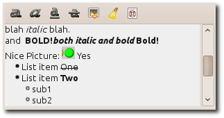

| Top |
GdauiRtEditorGdauiRtEditor — Rich text editor which uses a subset of the txt2tags markup. |
 |
| GtkWidget * | gdaui_rt_editor_new () |
| gchar * | gdaui_rt_editor_get_contents () |
| void | gdaui_rt_editor_set_contents () |
| void | gdaui_rt_editor_set_editable () |
| GtkTextBuffer * | buffer | Read |
| gboolean | in-scrolled-window | Read / Write |
| gboolean | no-background | Read / Write |
| gboolean | show-markup | Read / Write |
GObject ╰── GInitiallyUnowned ╰── GtkWidget ╰── GtkContainer ╰── GtkBox ╰── GdauiRtEditor
GdauiRtEditor implements AtkImplementorIface, GtkBuildable and GtkOrientable.
The text entered in the editor can be formatted using bold, underline, title, ... attributes and then extracted using a subset of the txt2tags markup. Use this widget to edit textual fields where some markup is desirable to organize the text.
For example the real text used to obtain the formatting in the figure is:
blah //italic// blah. and ** BOLD!//both italic and bold// Bold!** Nice Picture: [[[R2RrUAA...y8vLy8tYQwAA]]] Yes - List item --One-- - List item **Two** - sub1 - sub2
where the picture's serialized data has been truncated here for readability (between the [[[ and ]]] markers). Pictures are usually inserted using the incorporated tollbar and not y hand (even though it's possible).
GtkWidget *
gdaui_rt_editor_new (void);
Creates a new GdauiRtEditor widget
Since: 4.2.2
gchar *
gdaui_rt_editor_get_contents (GdauiRtEditor *editor);
Get the contents of editor
, using the markup syntax
Since: 4.2.2
void gdaui_rt_editor_set_contents (GdauiRtEditor *editor,const gchar *markup,gint length);
Set editor
's contents. If length
is -1, markup
must be nul-terminated
editor |
||
markup |
the text to set in |
|
length |
length of text in bytes. |
Since: 4.2.2
void gdaui_rt_editor_set_editable (GdauiRtEditor *editor,gboolean editable);
Set editor
's editability
Since: 4.2.2
“buffer” property“buffer” GtkTextBuffer *
Get access to the actual GtkTextBuffer used. Do not modify it!
Owner: GdauiRtEditor
Flags: Read
“in-scrolled-window” property“in-scrolled-window” gboolean
Determines if the contents of the widget appears in a scrolled window or not.
Owner: GdauiRtEditor
Flags: Read / Write
Default value: TRUE
“no-background” property“no-background” gboolean
If set to TRUE, then the default text background is removed
and thus the textbackground is the default widget's background.
This property has to be set before the widget is realized, and is taken into account only if the widget is not editable (when it's realized).
Owner: GdauiRtEditor
Flags: Read / Write
Default value: FALSE
“show-markup” property“show-markup” gboolean
Instead of showing the formatted text, display the raw text (in the txt2tags syntax)
Owner: GdauiRtEditor
Flags: Read / Write
Default value: FALSE
“changed” signalvoid user_function (GdauiRtEditor *gdauirteditor, gpointer user_data)
Flags: Run Last